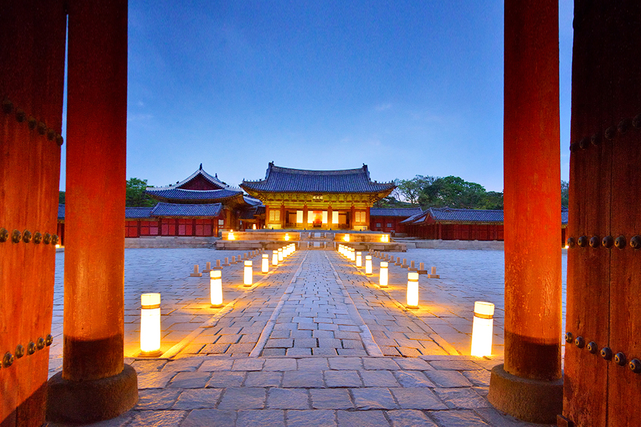
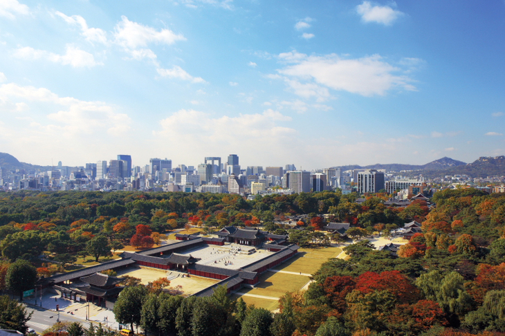
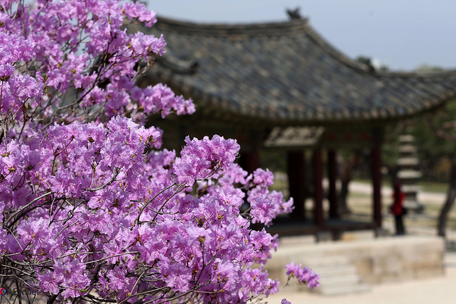
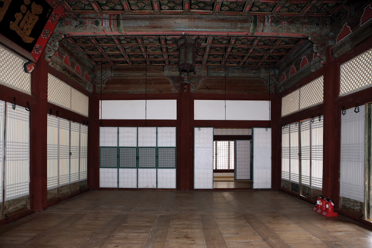
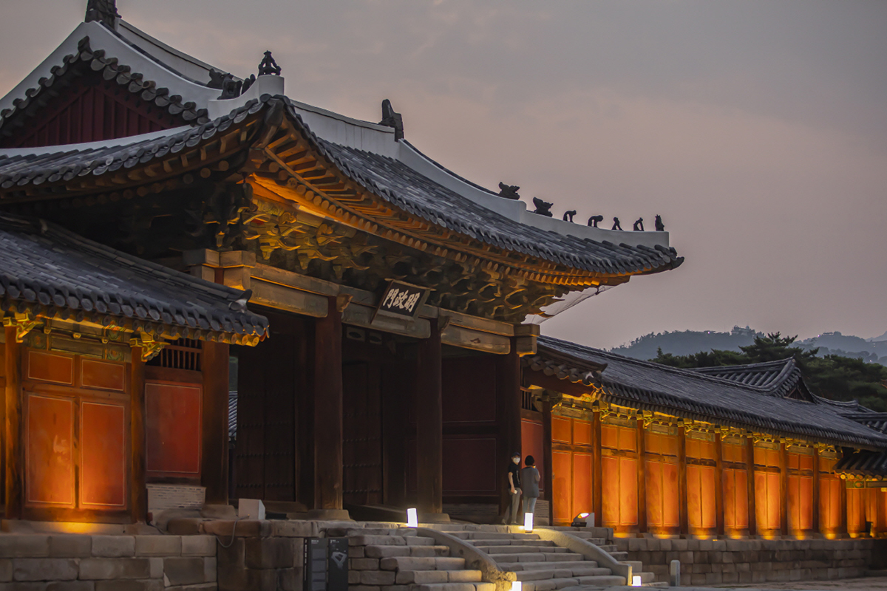

창경궁 Changgyeonggung
- 
- 
- 
- 
- 
오전 09시 ~ 오후 09시
(입장마감 : 오후 08시)
매주 월요일은 휴궁일입니다. (궁중문화축전 기간은 휴궁일 없이 운영합니다)
※ 휴궁일이 공휴일(대체공휴일 포함)과 겹칠 경우 개방하며, 이 경우 개방한 공휴일 다음의 첫 번째 비공휴일을 휴궁일로 합니다.


물빛연화
01.01 ~ 12.31
10:00 | 14:00
궁중직업실록
01.01 ~ 12.31
10:00 | 14:00
창경궁은 원래 1418년(세종 즉위) 세종이 아버지 태종을 위해 지은 수강궁(壽康宮)이 있던 자리였습니다. 1483년(성종 13) 성종은 당시 왕실의 어른인 정희왕후(세조의 왕비), 소혜왕후(인수대비, 추존 덕종의 왕비), 안순왕후(예종의 왕비)의 생활공간을 위해 수강궁을 크게 확장하고 궁의 이름을 창경궁이라 하였습니다.
창경궁은 독립적인 궁궐로 쓰이기도 했지만, 창덕궁과 경계 없이 하나의 궁궐로 사용하여 동궐(東闕)이라 불렸습니다. 창덕궁이 주로 정치를 위한 공간으로 사용하였다면 창경궁은 생활공간으로 사용하였기 때문에 주로 권위보다는 실용성을 강조한 모습을 보여줍니다. 1592년(선조 25) 임진왜란으로 불에 타 없어졌다가 광해군 대에 다시 지었는데, 중심 건물인 명정전은 이때 지은 것으로 5대 궁궐의 정전 중 가장 오래된 건물입니다. 이곳은 주로 왕실 여성의 생활공간으로 사용되었고, 여러 왕이 태어난 곳이자 여러 왕과 왕비가 세상을 떠난 곳입니다. 특히 추존 장조(사도세자)와 정조가 창경궁에서 태어나 창경궁에서 세상을 떠났습니다.
그러나 대한제국 시기인 1907년부터 일제에 의해 창경궁이 훼손되면서 건물 대부분이 철거되고 궁 안에 동물원과 식물원이 들어섰으니, 1911년에는 이름마저 창경원(昌慶苑)으로 바뀌게 되었습니다. 1983년 궁의 이름을 다시 창경궁으로 바꾸고 본격적으로 복원공사가 진행되어 현재의 모습을 갖추게 되었습니다.
서울 종로구 창경궁로 185
4호선 혜화역4번 출구 (도보 15분)
혜화동로터리 방향 홍화문쪽 (정류소번호 : 01002) (간선) 100, 102, 104, 106, 107, 108, 140, 143, 150, 151, 160, 162, 171, 172, 272, 301, 710 / 공항버스 : 6011
원남동사거리 방향 홍화문쪽 (정류소번호 : 01224)(간선) 151, 171, 172, 272, 601